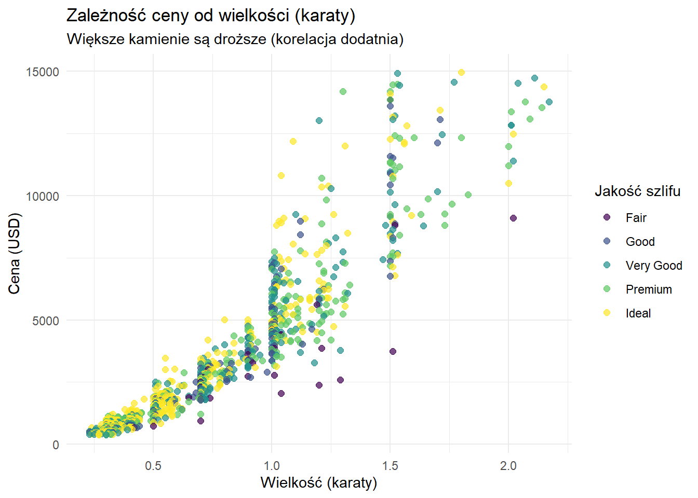
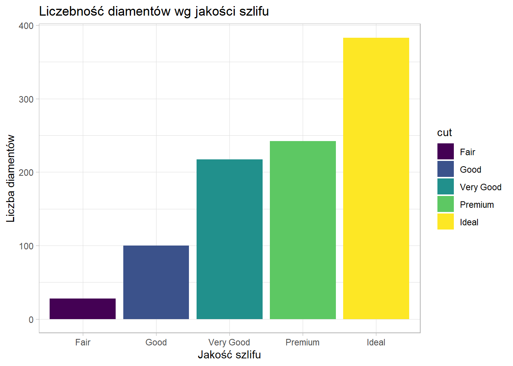
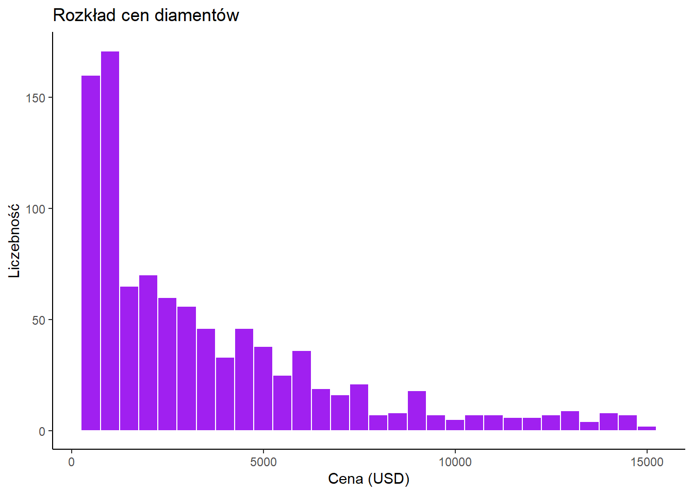

Last updated: 2026-01-18
Checks: 7 0
Knit directory: ProjektZaliczeniowyZB/
This reproducible R Markdown analysis was created with workflowr (version 1.7.2). The Checks tab describes the reproducibility checks that were applied when the results were created. The Past versions tab lists the development history.
Great! Since the R Markdown file has been committed to the Git repository, you know the exact version of the code that produced these results.
Great job! The global environment was empty. Objects defined in the global environment can affect the analysis in your R Markdown file in unknown ways. For reproduciblity it’s best to always run the code in an empty environment.
The command set.seed(20260110) was run prior to running
the code in the R Markdown file. Setting a seed ensures that any results
that rely on randomness, e.g. subsampling or permutations, are
reproducible.
Great job! Recording the operating system, R version, and package versions is critical for reproducibility.
Nice! There were no cached chunks for this analysis, so you can be confident that you successfully produced the results during this run.
Great job! Using relative paths to the files within your workflowr project makes it easier to run your code on other machines.
Great! You are using Git for version control. Tracking code development and connecting the code version to the results is critical for reproducibility.
The results in this page were generated with repository version 5bb13b0. See the Past versions tab to see a history of the changes made to the R Markdown and HTML files.
Note that you need to be careful to ensure that all relevant files for
the analysis have been committed to Git prior to generating the results
(you can use wflow_publish or
wflow_git_commit). workflowr only checks the R Markdown
file, but you know if there are other scripts or data files that it
depends on. Below is the status of the Git repository when the results
were generated:
Ignored files:
Ignored: .Rhistory
Ignored: .Rproj.user/
Note that any generated files, e.g. HTML, png, CSS, etc., are not included in this status report because it is ok for generated content to have uncommitted changes.
These are the previous versions of the repository in which changes were
made to the R Markdown (analysis/analiza.Rmd) and HTML
(docs/analiza.html) files. If you’ve configured a remote
Git repository (see ?wflow_git_remote), click on the
hyperlinks in the table below to view the files as they were in that
past version.
| File | Version | Author | Date | Message |
|---|---|---|---|---|
| html | 5bb13b0 | Zuzanna Bugajska | 2026-01-18 | Build site. |
| html | f07eda8 | Zuzanna Bugajska | 2026-01-18 | poprawka |
| html | 83536a6 | Zuzanna Bugajska | 2026-01-18 | Build site. |
| Rmd | 3e87240 | Zuzanna Bugajska | 2026-01-18 | Poprawka do analizy |
| html | be4d22c | Zuzanna Bugajska | 2026-01-10 | Build site. |
| Rmd | dbf5d0d | Zuzanna Bugajska | 2026-01-10 | Poprawka do analizy |
| html | e082653 | Zuzanna Bugajska | 2026-01-10 | Build site. |
| Rmd | 75ac752 | Zuzanna Bugajska | 2026-01-10 | Dodanie mutate do analizy |
| html | 554c23f | Zuzanna Bugajska | 2026-01-10 | Build site. |
| Rmd | 398fa0b | Zuzanna Bugajska | 2026-01-10 | Pierwsza wersja strony |
| html | 398fa0b | Zuzanna Bugajska | 2026-01-10 | Pierwsza wersja strony |
Do analizy wybrałam zbiór danych diamonds z pakietu
ggplot2. Oryginalny zbiór jest bardzo duży, dlatego do
analizy wylosowałam próbkę 1000 diamentów.
Co będę badać?
library(tidyverse)
library(ggplot2)Zbiór zawiera takie zmienne jak: carat (waga),
cut (jakość szlifu), color (kolor) i
price (cena).
Co zrobiłam po kolei?
cena_za_karat (cena podzielona przez wagę).data(diamonds)
set.seed(123) #ziarno losowosci dla powtarzalnosci wyników
diamenty <- diamonds %>%
sample_n(1000) %>% #losowanie 1000 sztuk
select(price, carat, cut, color) %>% #wybranie cech, które potrzebuje
filter(price < 15000) %>%
mutate(cena_za_karat = price / carat) %>% #filtrowanie danych na podstawie ceny
arrange(desc(price)) #sortowanie od najdroższego
head(diamenty)# A tibble: 6 × 5
price carat cut color cena_za_karat
<int> <dbl> <ord> <ord> <dbl>
1 14959 1.8 Ideal I 8311.
2 14931 1.53 Very Good E 9759.
3 14740 2.11 Very Good I 6986.
4 14561 1.77 Very Good D 8227.
5 14527 2.04 Very Good J 7121.
6 14483 1.53 Premium F 9466.Sprawdźmy średnią cenę diamentu w zależności od jakości jego szlifu (Cut). Jakość szlifu oceniana jest od “Fair” (Słaba) do “Ideal” (Idealna).
tabela_cen <- diamenty %>%
group_by(cut) %>%
summarise(
Srednia_Cena = mean(price),
Srednia_Wielkosc = mean(carat),
Liczba_Sztuk = n()
) %>%
arrange(desc(Srednia_Cena))
tabela_cen# A tibble: 5 × 4
cut Srednia_Cena Srednia_Wielkosc Liczba_Sztuk
<ord> <dbl> <dbl> <int>
1 Premium 4276. 0.879 242
2 Good 4168. 0.865 100
3 Very Good 3766. 0.791 217
4 Fair 3586. 0.972 28
5 Ideal 2785. 0.632 383Tutaj zobaczymy, jak bardzo cena rośnie wraz z wielkością kamienia.
ggplot(diamenty, aes(x = carat, y = price, color = cut)) +
geom_point(alpha = 0.7, size = 2) +
labs(
title = "Zależność ceny od wielkości (karaty)",
x = "Wielkość (karaty)",
y = "Cena (USD)",
color = "Jakość szlifu"
) +
theme_minimal()
Komentarz: Widać, że małe diamenty są tanie, ale po przekroczeniu 1 karata ich cena znacznie wzrasta w górę.
ggplot(diamenty, aes(x = cut, fill = cut)) +
geom_bar() +
labs(
title = "Liczebność diamentów wg jakości szlifu",
x = "Jakość szlifu",
y = "Liczba diamentów"
) +
theme_light()
| Version | Author | Date |
|---|---|---|
| 398fa0b | Zuzanna Bugajska | 2026-01-10 |
Komentarz: Najwięcej w wybranym zbiorze jest diamentów o szlifie “Ideal” oraz “Premium”. Najrzadziej pojawiają się te o szlifie “Fair” (najgorszym).
Sprawdzę, ile najczęściej kosztują diamenty w wybranej próbce.
ggplot(diamenty, aes(x = price)) +
geom_histogram(binwidth = 500, fill = "purple", color = "white") +
labs(
title = "Rozkład cen diamentów",
x = "Cena (USD)",
y = "Liczebność"
) +
theme_classic()
| Version | Author | Date |
|---|---|---|
| 398fa0b | Zuzanna Bugajska | 2026-01-10 |
Komentarz: Najwięcej jest tanich diamentów (poniżej 2500$), a drogie kamienie zdarzają się rzadziej.
sessionInfo()R version 4.4.2 (2024-10-31 ucrt)
Platform: x86_64-w64-mingw32/x64
Running under: Windows 11 x64 (build 26200)
Matrix products: default
locale:
[1] LC_COLLATE=Polish_Poland.utf8 LC_CTYPE=Polish_Poland.utf8
[3] LC_MONETARY=Polish_Poland.utf8 LC_NUMERIC=C
[5] LC_TIME=Polish_Poland.utf8
time zone: Europe/Warsaw
tzcode source: internal
attached base packages:
[1] stats graphics grDevices utils datasets methods base
other attached packages:
[1] lubridate_1.9.4 forcats_1.0.0 stringr_1.5.1 dplyr_1.1.4
[5] purrr_1.0.2 readr_2.1.5 tidyr_1.3.1 tibble_3.2.1
[9] ggplot2_3.5.1 tidyverse_2.0.0 workflowr_1.7.2
loaded via a namespace (and not attached):
[1] sass_0.4.10 utf8_1.2.4 generics_0.1.3 stringi_1.8.4
[5] hms_1.1.3 digest_0.6.39 magrittr_2.0.3 timechange_0.3.0
[9] evaluate_1.0.5 grid_4.4.2 fastmap_1.2.0 rprojroot_2.1.1
[13] jsonlite_1.8.9 processx_3.8.6 whisker_0.4.1 ps_1.9.1
[17] promises_1.5.0 httr_1.4.7 fansi_1.0.6 viridisLite_0.4.2
[21] scales_1.3.0 jquerylib_0.1.4 cli_3.6.3 rlang_1.1.4
[25] munsell_0.5.1 withr_3.0.2 cachem_1.1.0 yaml_2.3.12
[29] otel_0.2.0 tools_4.4.2 tzdb_0.4.0 colorspace_2.1-1
[33] httpuv_1.6.16 vctrs_0.6.5 R6_2.5.1 lifecycle_1.0.4
[37] git2r_0.36.2 fs_1.6.6 pkgconfig_2.0.3 callr_3.7.6
[41] pillar_1.9.0 bslib_0.9.0 later_1.4.5 gtable_0.3.6
[45] glue_1.8.0 Rcpp_1.0.13-1 xfun_0.55 tidyselect_1.2.1
[49] rstudioapi_0.17.1 knitr_1.51 farver_2.1.2 htmltools_0.5.9
[53] labeling_0.4.3 rmarkdown_2.30 compiler_4.4.2 getPass_0.2-4